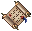

採掘道具
採掘手袋

Runic

古代

PSC
報酬布

サンダル
アドオン

Runic
PSC
服ブレス
| 鍛冶 | 採掘道具 |
採掘手袋 |
Runic |
古代 |
PSC |
その他 |
| 裁縫 | 報酬布 |
サンダル |
 アドオン |
Runic |
PSC |
服ブレス |


 dullcopper runic hammer
dullcopper runic hammer shadow runic hammer
shadow runic hammer copper runic hammer
copper runic hammer bronze runic hammer
bronze runic hammer golden runic hammer
golden runic hammer agapite runic hammer
agapite runic hammer verite runic hammervalorite runic hammer
verite runic hammervalorite runic hammer| runic hammer | Dullcopper | Shadow | Copper | Bronze |
| 画像 | |
|
|
|
| 使用回数 | 50 | 45 | 40 | 35 |
| 効果強度（％） | 40〜100 | 45〜100 | 50〜100 | 55〜100 |
| 付加プロパティ数 | 1〜2 | 2 | 2〜3 | 3 |
| runic hammer | Golden | Agapite | Verite | Valorite |
| 画像 | |
|
|
|
| 使用回数 | 30 | 25 | 20 | 15 |
| 効果強度（％） | 60〜100 | 65〜100 | 70〜100 | 85〜100 |
| 付加プロパティ数 | 3〜4 | 4 | 4〜5 | 5 |


 Fire
Fire
 small stretched hide (facing south) ／small stretched hide (facing east)
small stretched hide (facing south) ／small stretched hide (facing east)
 dark flower tapestry (facing east)
dark flower tapestry (facing east)
 flower tapestry (facing south) ／flower tapestry (facing east)
flower tapestry (facing south) ／flower tapestry (facing east)
 spined runic sewing kithorned runic sewing kit
spined runic sewing kithorned runic sewing kit| Spined | Horned | Barbed | |
| 画像 | |
|
|
| 使用回数 | 45 | 30 | 15 |
| 効果強度（％） | 40〜100 | 45〜100 | 50〜100 |
| 付加プロパティ数 | 1〜3 | 3〜4 | 4〜5 |